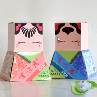
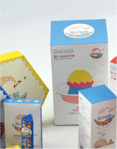
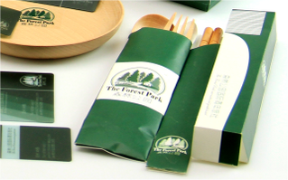
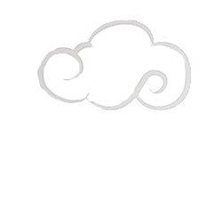
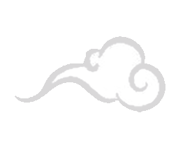
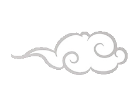

传播学
人文艺术与数字媒体学院
杭州电子科技大学
HangZhou Dianzi University
🔍
首页
学系概览
招生信息
教学信息
学院近闻
学生作品
文件下载
  
  
学系公告
公告一
传播系在最新评级
2024年06月20日
公告二
学术研讨会圆满成功
2024年07月01日
公告三
暑实项目报名开放
2024年07月10日
近日新闻
新闻一
传播系大广赛中获奖
2024年06月23日
新闻二
王教授学术会议
2024年06月21日
新闻三
新媒体实验室启用
2024年06月25日